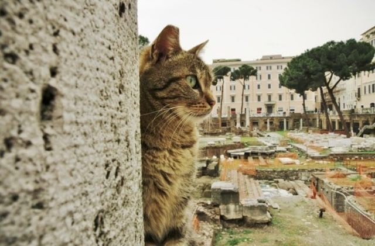
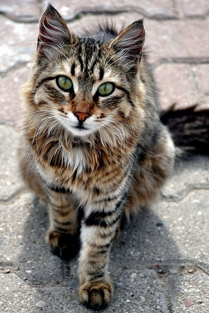
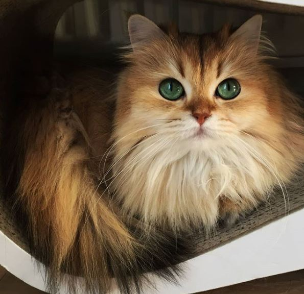

Cat History
Breif History of Domesticated Cats
It is thought that the first cats came from ancient egypt where they were first domesticated as pets. In fact, cats were associated with the Egyptian goddess Bastet and thus immortalized in different types of art including bronze sculptures and paintings. When their cats had passed away their bodies were mumified and buried with ornate caskets. During life cats would wear expensive gold jewelry with jewels to indicate the status of their owners.
The earliest domesticated cats were thought to be more than 8,000 years ago. A burial site in Cyprus has evidence of humans being buried with their beloved pets which is proof that humans lived side by side with cats.
When the Roman Empire expanded to Egypt, cats were introduced to the Romans. The Roman people loved cats so much that they became popular all throughout Europe. From Europe, cats boarded ships with their humans to go to the Americas. One of these cats was reported to be with Christopher Colombus and also aboard the famous Mayflower. In this way, cats were introduced to American life.
Some of the most influencial people to pave the way for modern house cats are World leaders. People like Winston Churchill, The Brittish Prime Minister during World War II, Abraham Lincoln. President Lincoln was an animal lover and brought the first cats into the white house. He also cared for stray cats because of his love for them.



